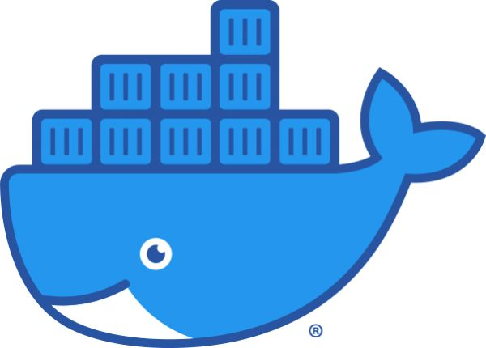
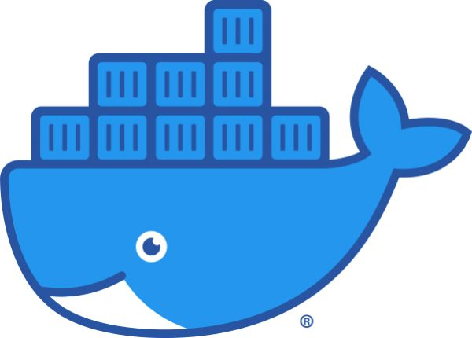

Web Developer
Desarrollo sitios web modernos, escalables y de alto rendimiento utilizando tecnologías de vanguardia como HTML, CSS, JavaScript, Git, PHP, MySQL, Python, Ubuntu, Docker y Postman.


 
